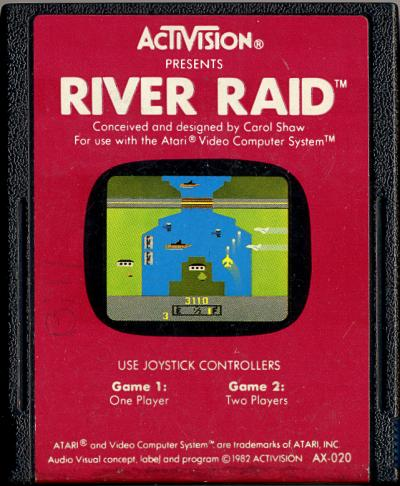

A primeira mulher a desenvolver um game no mundo: Carol Shaw

Carol Shaw nasceu em 1955 em Palo Alto, Califórnia. Shaw é filha do meio de dois irmãos. Seu pai era engenheiro mecânico e sua mãe dona de casa. Carol Shaw passou a infância e a adolescência na região do Vale do Silício, local que abrigava muitas empresas conhecidas no mundo da tecnologia, e isso acabou influenciando-a. Por conta da influência da família, Shaw despertou afinidade por construção e ferrovias. Carol Shaw, brincava com seus irmãos e seu pai com trens em miniaturas e criavam circuitos ferroviários. Inclusive, a brincadeira se tornou um projeto pessoal na faculdade de engenharia, mas Shaw largou o curso para focar na computação. Na adolescência, Carol Shaw teve seu primeiro contato com o primeiro jogo de Arcade lançado mundialmente, o Computer Space.
Escola
O seu primeiro contato com o computador, foi na escola para escrever programas para as aulas de matemática. Shaw participou de diversas competições de matemática no ensino fundamental e ensino médio. Por ser uma das poucas mulheres a fazer parte da turma de exatas, em entrevista para a revista Vintage Computing, ela conta dos preconceitos que sofreu por ser mulher, ao participar da área de STEM (Science, Technology, Engineering e Mathematics). As pessoas diziam: "Nossa, você é boa em matemática para uma garota". O programa computacional, era baseado no BASIC, e com isso, Shaw descobriu que o programa também permitia criar jogos textuais, como Star Trek. A partir disso, ela se encantou ainda mais com o mundo da programação.Ensino superior
Carol Shaw não sabia qual curso superior iria fazer. Primeiro ela ingressou na Faculdade de Letras e Ciências por conta das matérias na área de tecnologia. Entretanto, Shaw tinha uma forte influência na engenharia elétrica. Por essa razão, ela trocou o curso para Engenharia Civil. Por conta do contato com o computador e as programações em algumas matérias, ela focou em software. Em 1977, Shaw decidiu fazer seu mestrado em Ciência da Computação. Após procurar emprego em diversas empresas durante seu ensino superior, finalmente, foi entrevistada pela Atari.Atari
Na Atari, ela fez programação e design, em cinco jogos: Jogo da Velha 3d, Video Checkers, Polo, Othello e Super Breakout.Activision
Carol Shaw foi trabalhar na Tandem, onde haviam outras mulheres e sua superior também era uma mulher. Nessa empresa, ela fazia a programação em Assembly, que são dispositivos para máquinas de grande porte. Após alguns meses, ela entrou para Activision, onde se tornou a primeira mulher no mundo a criar um jogo: River Raid. O jogo River Raid foi inspirado em outro game, o Scramble. Naquela época, games ambientados no espaço chamava a atenção do público, Shaw optou fazer um jogo similar. Entretanto, o cofundador da Activision, pediu que ela fizesse algo fora do normal. Com essa orientação, Shaw pensou em um jogo de tiro, uma tela na vertical com uma rolagem. Para compor o cenário, colocou uma terra dividida por um rio ao meio. E para dar movimento, o jogador controlava o barco que estava no rio. Ao apresentar o novo jogo, pediram que ela colocasse um jato, e assim fez.